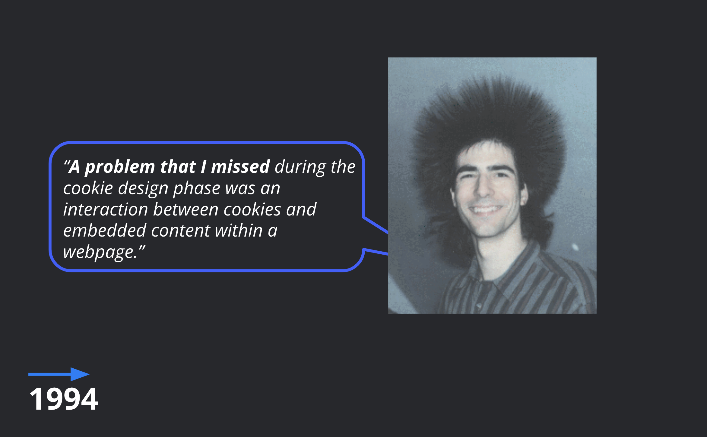
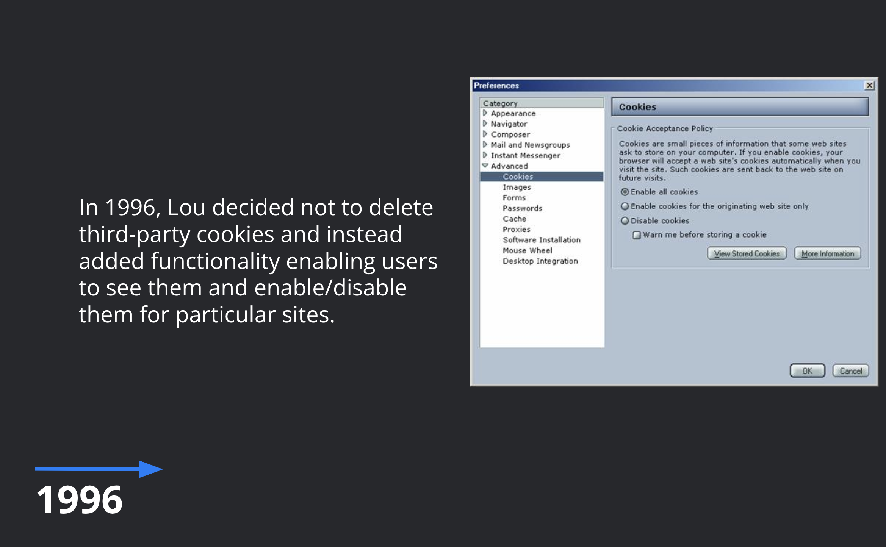
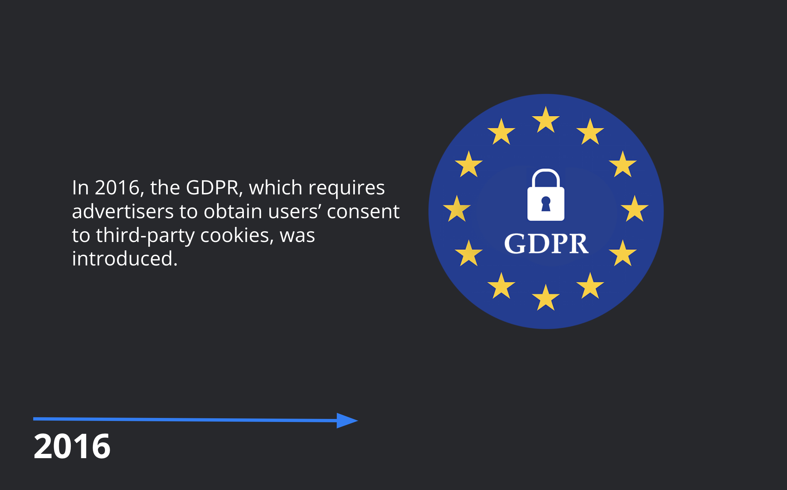
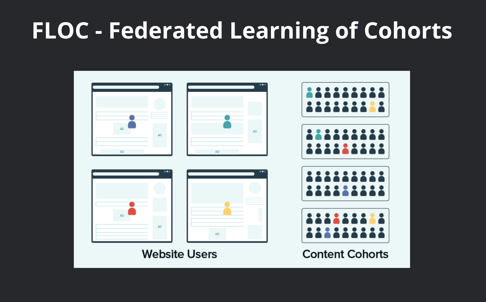
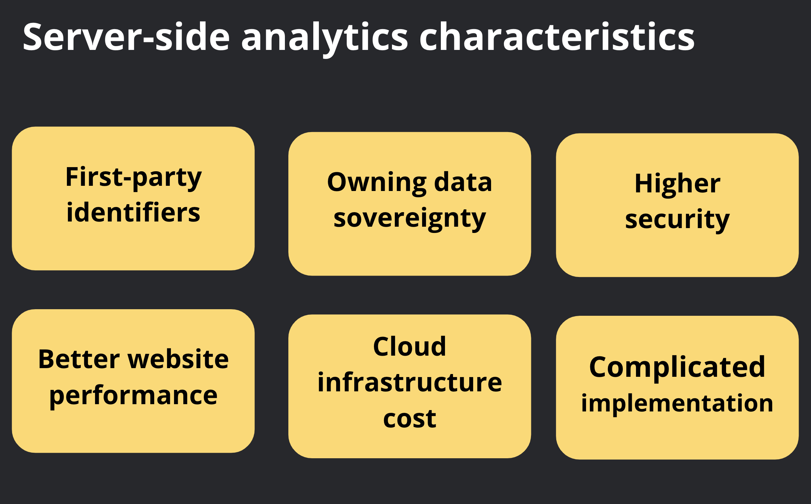
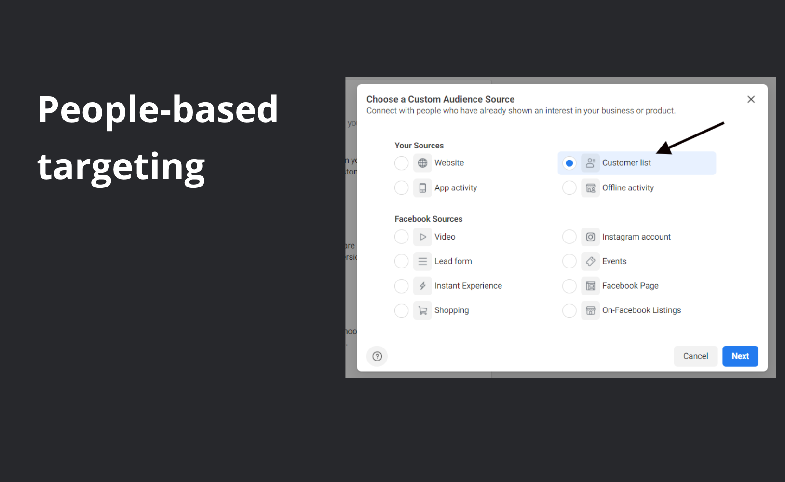
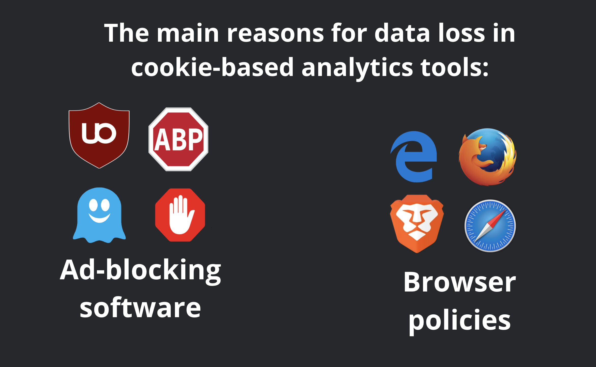
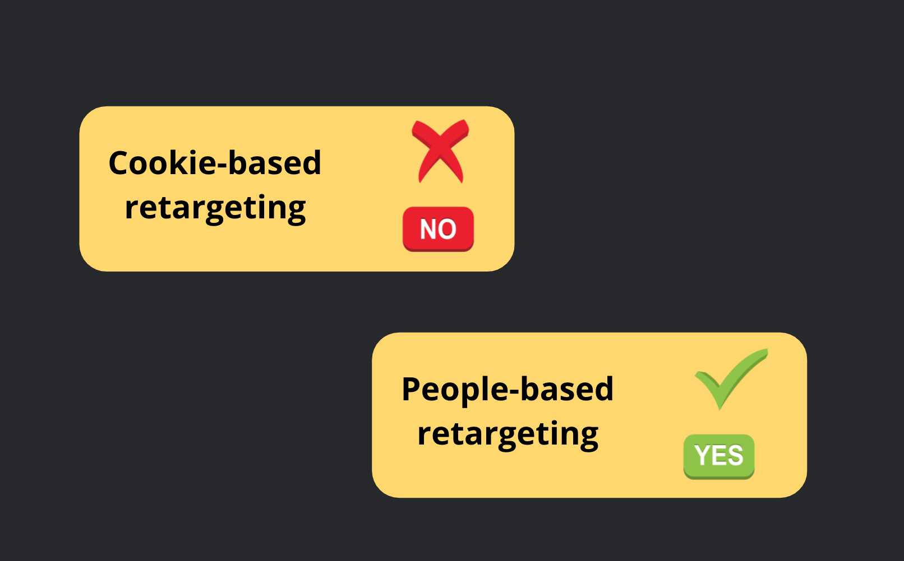
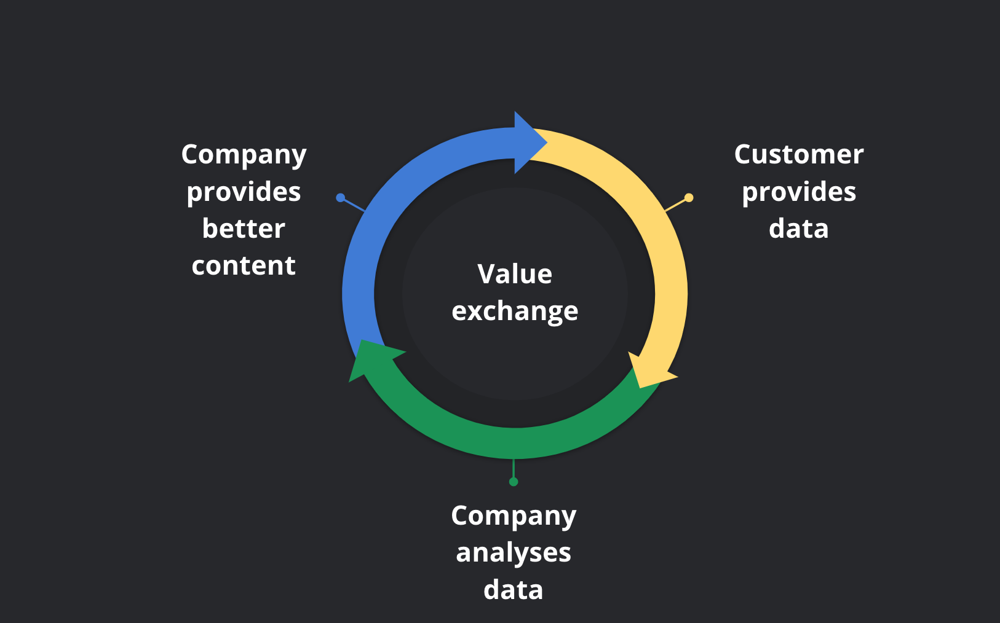

LINKS
December 12, 2021
Hi everyone! I can’t wait to share with you important and exciting updates about digital advertising and analytics in a world without third-party cookies.The digital landscape is changing rapidly, so today we’ll take a look at the most significant trends and expectations and will discuss what we should do to prepare as best we can.
But first, let us briefly recap the history to understand where we are now and how we ended up here.
Part 1. A brief history of cookies (and privacy on the internet)
Let’s go back to 1994! The internet was completely anonymous. If you visited some websites, left them and returned later, this would lead to data loss. Lou Montulli, a young engineer, was working on Netscape browser development. He joined a working group that was developing a shopping cart and discovered that the existing functionality wouldn’t allow users to maintain a connection between different sessions.
Lou took up the challenge to create an identifier that would make this connection possible. Later, he would say that he considered two options: a unique ID, which could be used to log into a browser, and a cookie, a small, anonymous piece of data. Lou rejected the first option because, in his opinion, it could be used to track a user on every website. Therefore, he chose cookies, which had nothing to do with marketing and advertising.
Lou hadn’t foreseen that cookies could be used for tracking. He supposed that to make this happen, many websites would have to conspire with one another and start using a single cookie. At the time the cookies were created, Lou didn’t know how easy it was to do this with the help of embedded content (for example, using tracking pixels).

In 1995, DoubleClick was founded – the first internet advertising network to unite millions of websites and one which used cookies to track its visitors and display ads. Thus, with the creation of DoubleClick, something happened that Lou never thought would happen.

In 1996, for the first time, the question of whether third-party cookies should be eliminated arose. At Netscape, the decision about whether to ban third-party cookies fell to Montulli, who decided to spare them. He decided not to delete third-party cookies but added functionality enabling users to see them and enable or disable them for particular sites. Since 1996, there haven’t been many changes regarding how cookies work. Large adtech companies continued to appear and make money, and public discontent grew, but the technology itself stayed more or less the same.
In 2002, the ePrivacy Directive became the first major privacy law to stipulate that users should be able to refuse cookies. In 2008, Google bought DoubleClick, and its advertising business expanded beyond search ads. In 2016, the GDPR, which requires advertisers to get users’ consent to use of third-party cookies, was introduced.

In 2017, the use of ad blockers increased by 30% worldwide, and Apple began blocking third-party tracking cookies on its browser, Safari. In 2018, the GDPR came into effect, and I’m sure many of us remember this. This was the same year in which the Cambridge Analytica data scandal broke. By the way, the scandal had nothing to do with cookies. Cambridge Analytica got access to the data of millions of users through a quiz app on Facebook called thisisyourdigitallife. While individuals were answering questions, the app collected all their data and their friends’ data. This case hit the headlines. It fueled concern about privacy on the internet and affected various technologies, including cookies. It also accelerated implementation of regulatory acts like the GDPR and others.
In 2020, the California Consumer Privacy Act (CCPA) came into effect. It is effectively the same as the GDPR but in California. Google announced that it would phase out third-party cookies in Chrome in 2022 (though has since changed the expected year to 2023), and Apple has changed its identifier for advertisers (IDFA). App developers should now use the App Tracking Transparency framework. As we are nearing the end of 2021, let’s discuss what to expect next.
Part 2. What’s next: noticeable trends in a world without third-party cookies
#1. First-party data collection will become crucial.
Since third-party cookies won’t be available anymore for many companies, it will be vital to organize first-party data collection. Unlike third-party data, first-party data are collected directly from the audience and are owned by a company. A good example of third-party collection may be gated content and lead-generation forms used in ads. Of course, large companies which already have a lot of data about their users have the biggest advantage; and the largest of these large companies, so-called walled gardens, have the opportunity to build their own ecosystems, which are not dependent on any third-party data. Notably, we are talking about players like Google, Facebook and Amazon.
#2. Privacy sandbox by Google.
Google is working on its massive initiative to replace third-party cookies: the privacy sandbox, a series of proposals to “create a thriving web ecosystem that is respectful of users and private by default”. But at the same time, Google wants this ecosystem to have all the functionality which is currently provided by third-party cookies. Google has postponed the phasing out of third-party cookies from Chrome, which may signal that not everything is perfect with the privacy sandbox.
One of the priority initiatives in the privacy sandbox is FLOC – Federated Learning of Cohorts. FLOC allows advertisers to track internet users without revealing their identities. Instead, users will be placed within browser cohorts according to their interests. FLOC has been met with resistance from industry and privacy advocates. It seems that Google could become even more powerful. It has the technology to parse FLOCs while remaining non-transparent for both users and advertisers.

#3. Server-side (SS) analytics will increase further.
Third-party cookies are going away, and increasingly fierce attacks on web trackers by browsers and ad blockers will lead to radical changes in the landscape of web analytics tools. As a replacement for traditional cookie-based analytics tools, server-side analytics is emerging. The main features of server-side analytics are as follows:
Two attributes of server-side analytics are, in a way, downsides: cloud infrastructure cost and complicated implementation.

#4. More publishers will limit access to content.
The next trend will be that more and more publishers will restrict access to their content after reaching a set limit of free articles. In part, this will be their way of collecting more first-party data and will help ensure survival. There are also rumors that large publishers may team up and implement unified IDs, thereby unifying their data. However, this is unlikely at the present time.
#5. A decline in cookie-based targeting methods.
One more obvious trend is a decline in cookie-based targeting methods. First of all, we are talking about cookie-based retargeting. Since there will be no cookies, there will be no opportunity to use them to create audience lists.
#6. Contextual advertising.
If you can no longer use a particular targeting method, you’ll have to find another one. It is said that everything new is well forgotten old, and in a sense, the industry is likely to go back to ways which don’t involve using IDs. One such method is good old contextual advertising, where the ad matches the content of a web page.
#7. People-based targeting.
One more targeting method which will stay with us and grow, on the other hand, involves very active usage of IDs. We are talking about so-called people-based targeting. An excellent example of this is advertising on social networks and other platforms, targeted at a particular audience, based on contact or email lists. These contact lists are collected as first-party data.

Part 3. How to prepare for the upcoming changes
Now let’s discuss what we should do to be better prepared to face the upcoming changes, and what actions we should take.
#1. Prepare for the fact that good old-fashioned GA will fade away (and the data will be less reliable).
Firstly, we need to prepare for the fact that current tools will change. Good old-fashioned Google Analytics will fade away. The majority of companies will stop using it, but while we are still using it, we should understand that every month, unfortunately, the quality of data will decrease. This will happen for objective reasons, the main one being rapidly increasing usage of ad-blocking software that quite often blocks JavaScript counters and doesn’t allow data from web pages to be transmitted. The second reason is browsers’ policy regarding third-party cookies. They don’t generally kill third-party cookies (only Brave does this, in fact), but they limit them, breaking the session concept, which is the foundation of modern web analytics systems.

#2. Implement new analytics: more secure and without third-party identifiers.
But does that mean that we won’t have a web analytics system anymore? Not at all. But to get reliable data, companies need to reconsider the way they collect such data and implement new, more secure analytics systems. These will most likely be server-side analytics systems that use first-party identifiers and allow all data to be kept within a company. We have already discussed the main features of server-side analytics in the previous part.
#3. Prepare for a decline in cookie-based retargeting and similar audiences based on this.
The next big thing that we need to do is to prepare for the decline in cookie-based retargeting and similar audiences based on this. We have also already touched on this topic. No third-party cookies means no opportunities for retargeting based on them. Unfortunately, cookie-based retargeting will become history in the foreseeable future.
#4. Retarget the targeting: be prepared to use other targeting methods (people-based, for example).
However, this doesn’t mean the death of retargeting per se. It only means that if you want to continue using it, you need to reconfigure how you add users to the audience lists. For example, it will still be possible to use first-party data as a basis for people-based retargeting, where audiences are created based on user data collected by a company and uploaded to the advertising platforms. Obviously, this will only be possible if clear consent from users to do so is obtained.

#5. Pay more attention to first-party data collection.
Let’s talk more about first-party data. An essential action point should be more attention to first-party data. If, in the past, you didn’t do much first-party data collection, now that the importance of this has significantly increased, you might want to reconsider some of your workflows. One way to obtain more data, gain a better understanding of users and have more control over the funnel is active usage of the possibilities provided by user accounts. But it isn’t enough to implement mandatory account creation. It is also necessary to provide something in exchange for user data.
#6. Create a value exchange with customers and provide more value for zero and first-party data.
Such value can be provided in different forms. It could be time-based access or a time-based offer; it could be a service (for instance, premium support); or it could be personalized experience or a loyalty program. If we are talking about marketing, one of the best examples of value exchange is content. Value exchange based on content can be organized as shown in the picture below. The company creates content, and users get the content and provide data in exchange. The company analyzes how users interact with this content and, based on these data, creates new content. The cycle then starts all over again.

#7. Pay more attention to content marketing and email campaigns.
This brings us to the last action point on the list: we should pay more attention to content marketing and email programs. These channels will allow companies not only to communicate with the most interested and loyal customers but also provide them with an invaluable source of first-party data.
LINKS